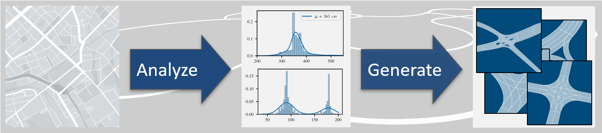

Road Generation Tool for Basic OpenDRIVE Road Networks
About
Simulation is a valuable building block for the verification and validation of automated driving functions (ADF). When simulating urban driving scenarios, simulation maps are one important component. Often, the generation of those road networks is a time consuming and manual effort. Furthermore, typically many variations of a distinct junction or road section are demanded to ensure that an ADF can be validated in the process of releasing those functions to the public.
Therefore, we present a prototypical solution for a logical road network description which is easy to maintain and modify. The concept aims to be non-redundant so that changes of distinct quantities do not affect other places in the code and thus the variation of maps is straightforward. In addition, the simple definition of junctions is a focus of the work. Intersecting roads are defined separately and then set in relation, finally a junction is generated automatically.
The idea is to derive the description from a commonly used, standardized format for simulation maps in order to generate this format from the introduced logical description. Consequently, we developed a command-line tool that generates the standardized simulation map format ASAM OpenDRIVE. Furthermore, there exists a Python package that allows the user to introduce stochastic variables for each quantity and generate as many variations of a logically identical road network as desired.
The proposed workflow can be seen in Fig. 1. Further information is published in [1] and [2]. This repository exlucdes the analysis of real world HD maps which is done in a separate internal tool.
Fig.1: Possible workflow for the presend road variation tool.
Repository Overview
This repository provides a tool for the generation of road networkds. Here, the main folders are named:
doc: Resources for documentationio: Sample input filessrc: Source codetest: Test files and their desired OpenDRIVE outputsxml: Contains the XSD validation filesvariation: Python based variation tool for the road generator
Installation
The following requirements have to be satisfied:
C++11CMake 2.6 or higherPython 3.6xercesC
Download the repository as a zip-file and un-zip, or use git with
# Clone Repository and open main folder
git clone git@github.com:ika-rwth-aachen/RoadGeneration.git
cd RoadGeneration
A build script for Linux systems is provided and can be executed from the root directory with
sh buildScript.sh
Alternatively you can build the project manually:
Install XercesC via a package manager, e.g.:
$ sudo apt install libxerces-c-dev
Build the Road-generation tool with standard cmake commands, e.g.:
$ mkdir -p build && cd build && cmake -DCMAKE_BUILD_TYPE=Release -DCMAKE_INSTALL_PREFIX=../bin ..
$ cmake --build .
Note: In principal, it is possible to compile and use the tool in Windows operating systems. However, this is experimental.
Usage
The compiled application can be called from the root folder:
./road-generation_executable <input>
This generates the output OpenDRIVE file next to the input file. The
provided input file is checked against input.xsd. Analogous the
output file is checked against the output.xsd file which specifies
the openDRIVE 1.5 standard. For a list of all parameters use the help
flag of the tool.
./road-generation_executable -h
Documentation
A simple but well designed C++ reference documentation is provided.
Variation tool
The Variation tool is used to generate a variety of different scenarios based on the same general road network. A template file is provided to specify variables as well as the general road network structure. A more thorough documentation can be found in the variation subdirectory.
Installation
You can run the code from the variation subfolder, however, the
variation tool can be installed system wide by using the install script
in the root directory.
sh install-variation.sh
Licenses
The project is distributed under the MIT License.
Citation
@INPROCEEDINGS{BeckerRussGeller2020,
author = {Daniel Becker and
Fabian Ru{\ss} and
Christian Geller and
Lutz Eckstein},
title = {Generation of Complex Road Networks Using a Simplified Logical Description
for the Validation of Automated Vehicles},
booktitle = {2020 IEEE 23rd International Conference on Intelligent Transportation Systems (ITSC)},
year = {2020},
url = {https://arxiv.org/abs/2006.03403},
doi = {10.1109/ITSC45102.2020.9294664}}
[2]
@INPROCEEDINGS{BeckerGeller2022,
author = {Daniel Becker and
Christian Geller and
Lutz Eckstein},
title = {Road Network Variation Based on HD Map Analysis for the Simulative Safety Assurance of Automated Vehicles},
booktitle = {2022 International Conference on Electrical, Computer, Communications and Mechatronics Engineering (ICECCME)},
year = {2022},
url = {https://arxiv.org/abs/2210.00853},
doi = {...}}
Acknowledgements and Credits
This work received funding from the research project “SET Level” of the PEGASUS project family, promoted by the German Federal Ministry for Economic Affairs and Climate Action based on a decision of the German Bundestag.
SET Level |
PEGASUS Family |
BMWK |
|---|---|---|
|
|
|